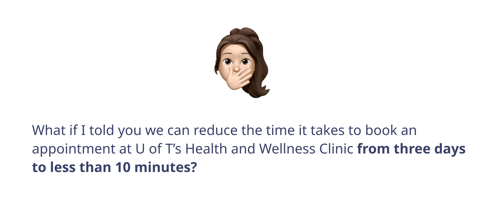
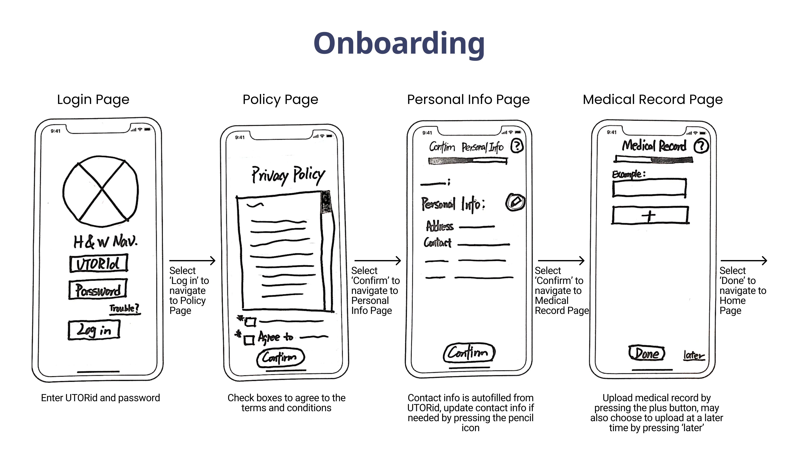
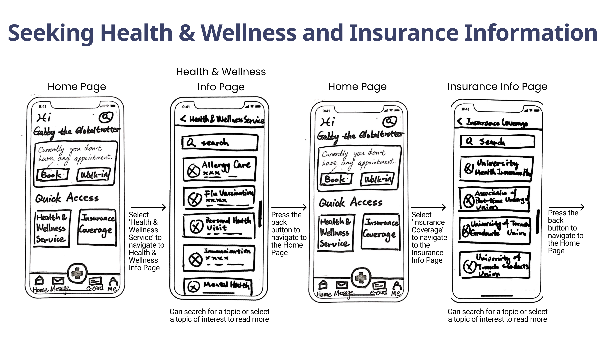
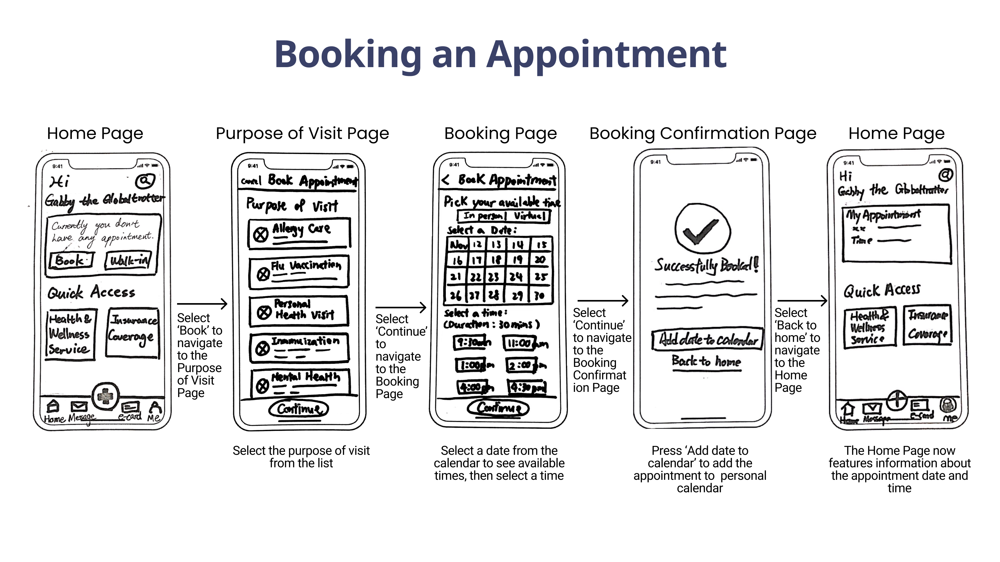
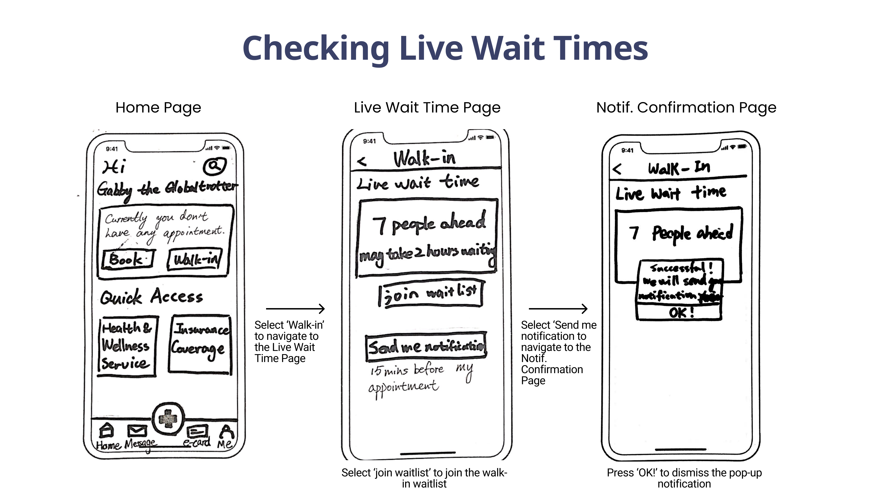
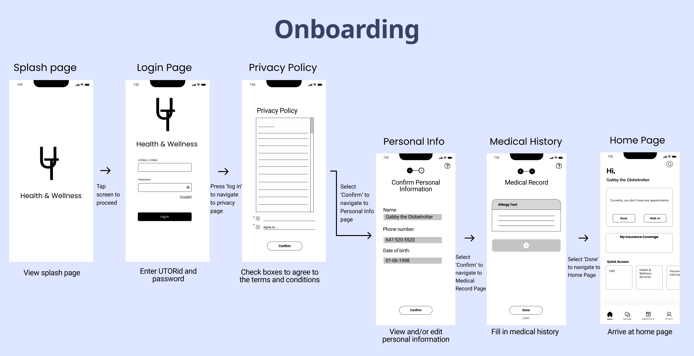
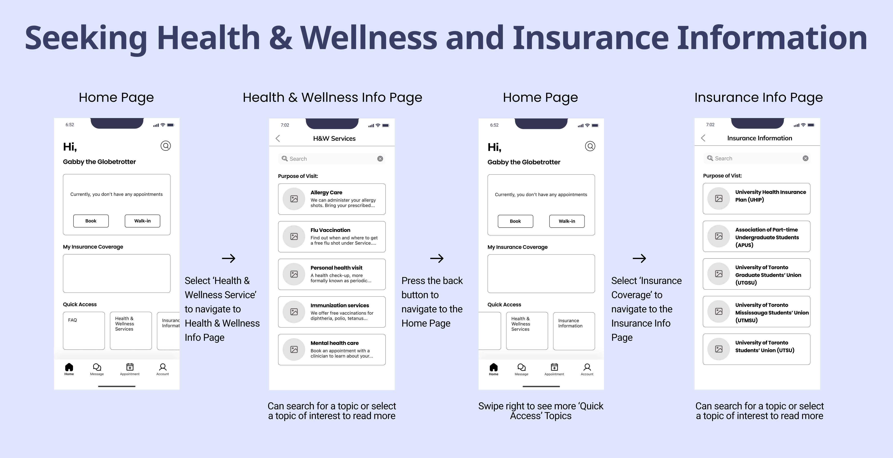
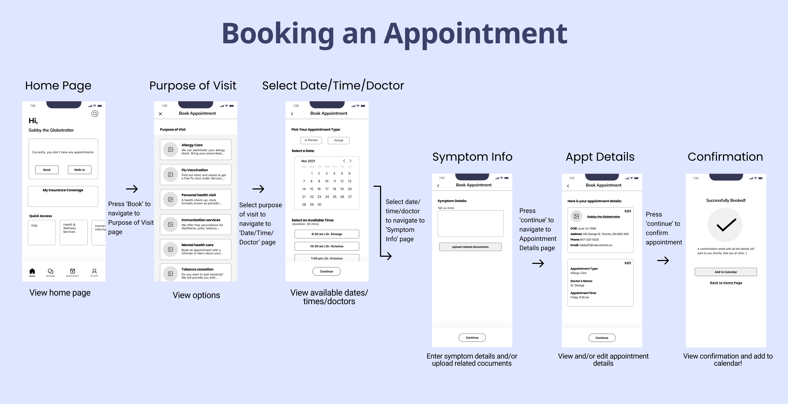
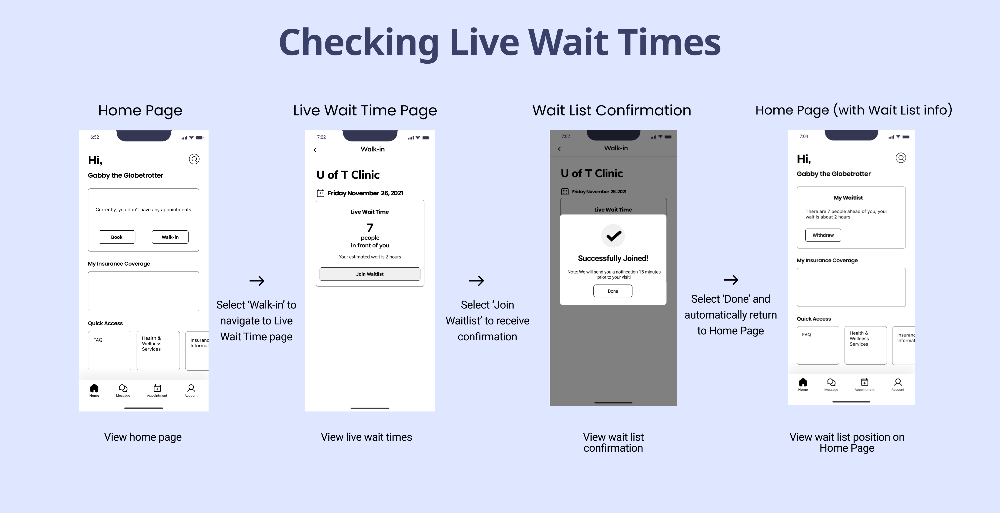
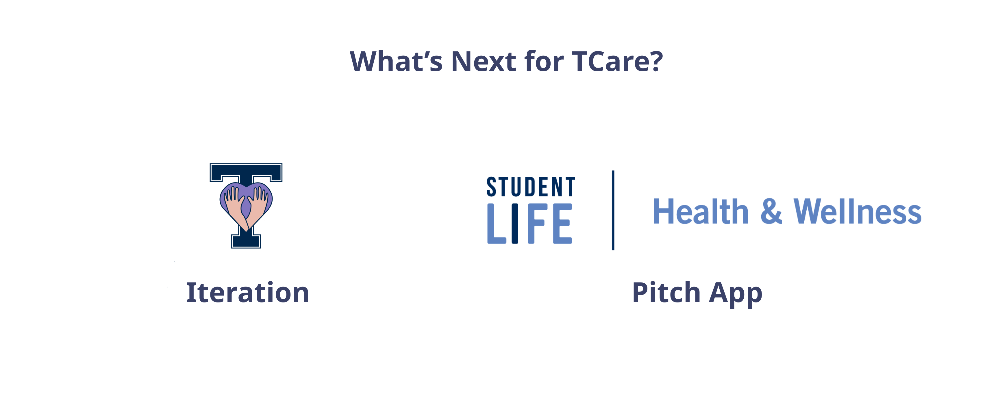

Accessible healthcare
Connecting U of T students to the healthcare they need.
Overview
Product: TCare is an app that streamlines University of Toronto (U of T) students' booking experience for Health & Wellness clinic appointments. It serves as a platform for students to seek information about insurance and healthcare at the university, and access their insurance coverage directly through the app.

Problem: Booking an appointment with Health & Wellness is a lengthy and tedious process. Students must navigate five different websites, send multiple emails, make several phone calls, and fill out numerous forms just to book an appointment.
Goal: Design a solution that facilitates quick and smooth booking of Health & Wellness appointments, and allows students to effortlessly find information about both Health & Wellness and their insurance.
Client: Innovation Hub, University of Toronto.
My Role: Product designer and project manager.
- Facilitated two user interviews.
- Spearheaded affinity diagramming session.
- Co-created design evaluation plan.
- Crafted key screens for wireframes and prototype.
- Wrote, narrated, audio engineered, edited, and created original soundtrack for final video presentation.
Project Duration: Fall 2021 (12 weeks)
Foundational User Experience Research
Based on secondary research and conversations with peers, my team and I identified that accessing healthcare is a problem for many U of T students, so we decided to investigate this issue to see where the problems lie. We interviewed and surveyed U of T students on their experiences with Health & Wellness services at the university.
Affinity Diagram
I led an affinity diagramming session, wherein we used a "space saturate and group" approach, using inductive reasoning to identify themes and insights from primary research, forming ‘clusters’ of problems.
We noticed three key clusters of user pain points:
- New patient/first-time booking issues
- Long wait times
- Lack of insurance coverage info

Persona
To better understand users' needs, experiences, behaviours and goals, we developed a primary persona: Gabby, the Globetrotter. Gabby's persona is based on a careful analysis of our user interviews and affinity diagram.

Experience Mapping
We engaged in experience mapping to understand how Gabby might approach using our product, and ideate around the experience we wanted to provide for her. We mapped Gabby’s current state experience ("as is"), identifying the steps she presently needs to take to book an appointment at the Health & Wellness Clinic, and the actions, thoughts, and feelings that accompany them. Next, we mapped how we envisioned Gabby's future state experience ("to be") with our design solution. Her actions, thoughts, and feelings change dramatically for the better.
Big Ideas
To brainstorm some "big ideas" that could be transferable to our design solution, my teammates and I spent eight minutes individually sketching our ideas out on stickies. We then each casted votes for ideas based on how feasible or impactful we felt the ideas were.

Once we casted our votes, we created a prioritization grid to narrow our focus on a potential solution. Marginal gains represent those with a low amount of feasibility and impact votes. Big bets have the potential for high impact, but may not be feasible. Quick wins are those that are highly feasible, but not necessarily impactful. Home runs are highly feasible with the potential for tremendous impact on our persona.
Low-fidelity Prototype
Based on our analysis, we created a low-fidelity prototype encompassing four key flows: onboarding, seeking Health & Wellness and insurance information, booking, and viewing live clinic wait times.
   Lean Evaluation
To get initial, high-level feedback on our app, we recruited three U of T students—two undergraduates and one graduate student—from public spaces on campus. Our participants completed the four main flows: onboarding, seeking Health & Wellness and insurance information, booking an appointment, and checking live wait times. I then conducted semi-structured interviews about their views on the app’s low-fidelity prototype and flow.
Key Changes
Based on user feedback from the lean evaluation, I made some key changes, three of which are included below:
- Removal of confusing "plus sign" button, which previously contained the book or walk-in options.
- Easy-to-read single column for date and time to book appointment, along with available doctor(s) names.
- One button to join the waitlist and automatically receive a notification, instead of two separate buttons. Otherwise, users may forget to press the notification button and would not be notified when it is time for their walk-in visit.
Medium-fidelity Prototype
We created a clickable medium-fidelity prototype, iterating on the low-fidelity prototype by implementing the findings from the lean evaluation.
   Usability Testing
For our usability tests, we recruited students—two undergraduate and two graduate—waiting for their appointments at the U of T Health & Wellness clinic as we knew they would be familiar with the existing booking process. I asked them to perform four tasks corresponding to the four different flows in the prototype. I conducted brief post-task interviews for more granular feedback, and a summative interview after the test to gather high-level insights about their experiences.
Examples of tasks included:
- Book an allergy care appointment on November 25 at 9:30 a.m.
- Find information pertaining to your university-sponsored health insurance.
Based on user responses and feedback, I summed up the key findings from the usability test as follows:
Next Steps
- Iteration: More evaluation and redesign is needed to make sure TCare is ready for design handoff to developers.
- Pitch app to Health & Wellness Services: We are in touch with the U of T Innovation Hub and a senior staff member at Health & Wellness. Once we are confident of our design, we may pitch our product accordingly.
Reflection & Takeaways

- Tell a story.
I learned from both professors and top industry professionals about crafting a compelling UX narrative to keep stakeholders engaged. We did this through our persona, Gabby, the Globetrotter. While our design process was neither simple nor linear, I honed my storytelling skills, keeping users and our audiences hooked with what TCare has to offer.
- Business know-how drives UX value.
Having industry marketing experience under my belt, I spent time and effort planning around the feasibility of the product, copywriting, and crafting the TCare brand. I came up with TCare’s value proposition: “We can reduce the time it takes to book an appointment at U of T’s Health & Wellness Clinic from three days to 10 minutes.”
- Wear multiple hats.
In addition to my role as product designer, I served as project manager, and marketing and multimedia specialist. I handled not only UX aspects of the project, but leveraged my music production and software skills to craft original music for and audio engineer the final video, which I also wrote and narrated. I presented the video to design leaders at IBM, CIBC, and Telus Health.
This was a challenging yet rewarding project to work on. Thank you for checking it out. I welcome feedback.
Back to top